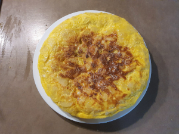

Tortilla

Description
The classic Spanish omelette recipe made with potatoes, eggs, onion, and olive oil — that’s it!
You can decide to not use the onion but you will be seen as a monster for lots of spanish people. Read why here
Ingredients
- 1/2 cup olive oil
- 5 medium-sized potatoes
- 1 brown onion
- 5 eggs
- Salt, to taste
Instructions
- Dice the potatoes into small pieces
- Heat the oil in a nonstick medium-sized pan
- Add the potatoes to the pan and start frying them at medium heat
- Chop the onion in small pieces and add to the pan
- Fry until the potatoes turn tender and the onion transparent
- Beat the eggs with salt
- When the potatoes/onion are ready drain the oil and mix them with the eggs, arranging them in a single layer
- Reduce heat down to low
- Pour the mixture into the pan, wait till the egg around the span is cooked.
- Place a plate on top of the pan, and with your hand holding the plate, flip the tortilla onto the plate. Then, slide the tortilla back into the pan
- Keep cooking, gently shaking the pan occasionally, until completely cooked through
- To remove the tortilla from the pan, place a plate on top of the tortilla and flip again onto the plate
Top
Index